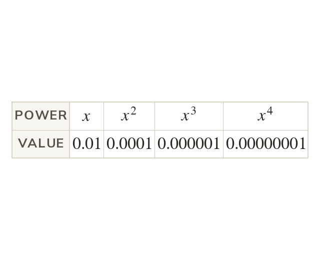
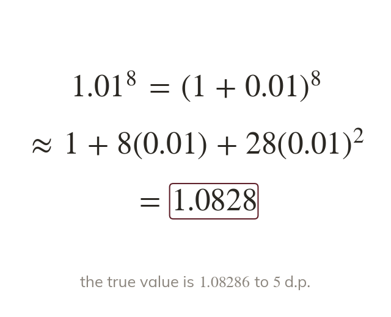
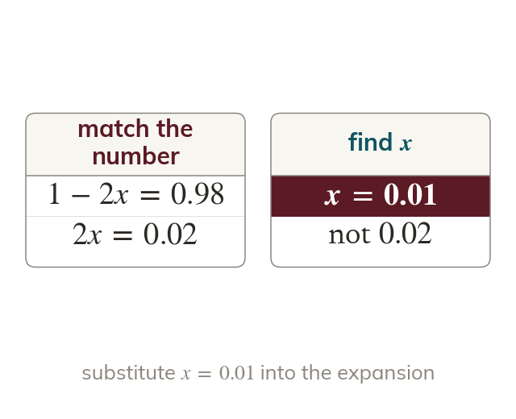
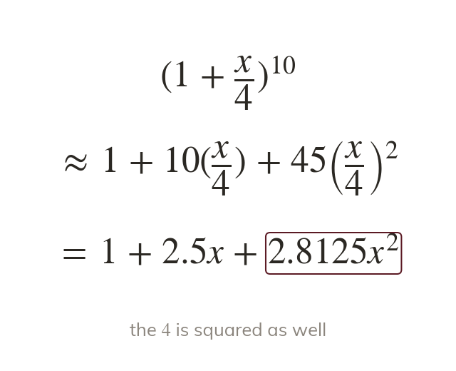
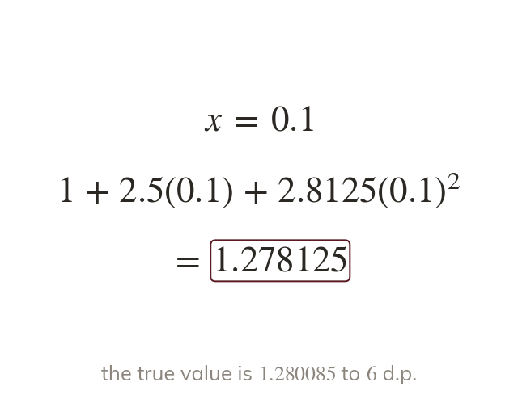
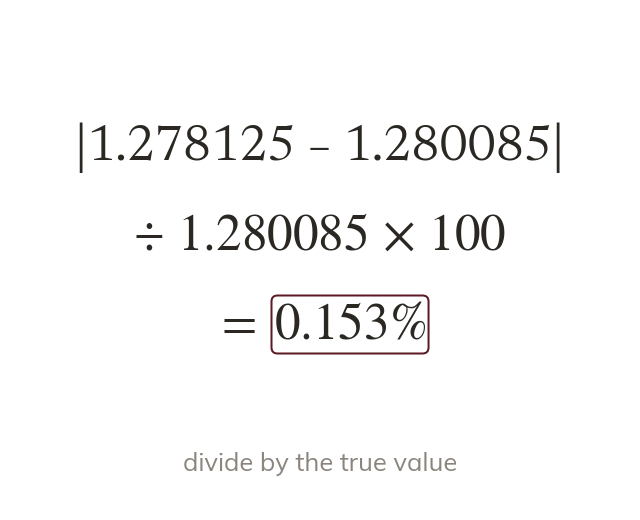

Small powers vanish
If is small, each higher power of is far smaller. With is and is only
When is small its higher powers are tiny, so the first few terms of a binomial expansion give a close estimate of a number such as
This closes the chapter, and the same idea returns in Year where the expansion is used for powers that are not whole numbers.
Work down the page at your own pace. Write every answer in your book first, then click to check it.
Read each card, then follow the worked examples one step at a time.

If is small, each higher power of is far smaller. With is and is only

To estimate a number such as match it to
Here so and the first three terms give the estimate.

If the bracket is then must equal the number. For gives
Pick an answer. If it's wrong, the feedback tells you which mistake it was.
Write the blanks in your book first, then tap each one to check.
Read each card, then follow the worked examples one step at a time.

With the whole is raised to each power. So the term is not

To estimate set
That gives so

The error is the gap between the estimate and the true value. Divide it by the true value, then multiply by
Pick an answer. If it's wrong, the feedback tells you which mistake it was.
Write the blanks in your book first, then tap each one to check.
Finished? Next lesson: 12.P12.1 Gradients of Curves and the Derivative.
For each skill, tap the one that is true for you today. Your Revise pages start with anything you mark Not yet.
Your ratings are saved on this device only.
Log in, then search for a code to practise that skill.